一 项目背景
心悦俱乐部官网，为腾讯游戏用户了解游戏动态、参与游戏活动、享受高端用户权益提供了便捷的入口。作为触达用户重点渠道之一，用户基数更是庞大。作为一个品牌的核心场景，心悦俱乐部旧官网存在已久，在实际使用中不足以承载更多的需求和使命，所以对此官网进行改版就成为必要的行为。
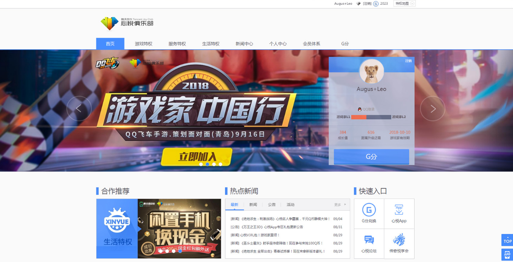
（旧版官网）
二 改版目标
这种大型平台类的官网改版项目，明确改版目标是非常重要的，我们要系统的分析官网现状，存在什么样的问题，解决的方向在哪里，从而得知：我们最终的改版目标是什么。
2.1现状分析与解决方向
一个官网的首页当然是最核心的位置，对首页的分析是最总要的。经过我们的系统分析，它存在以下一些核心问题：
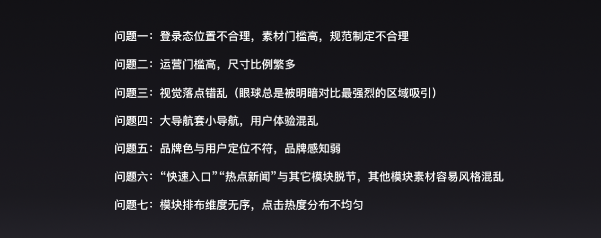
问题一解析：
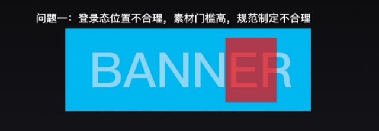
既然是官网，主要使用场景还是在PC浏览，大部分是坐着，也就是说有相对整块的时间进行体验，全屏浏览的概率也很大。所以更大的banner（或动态banner）带来的沉浸式体验和视觉冲击可以很好的解决这个问题，而登录态信息作为一个次重要信息，无需在banner位置做一模块叠压干扰，放在顶导航全局显示是更适合的形式。
问题二解析：
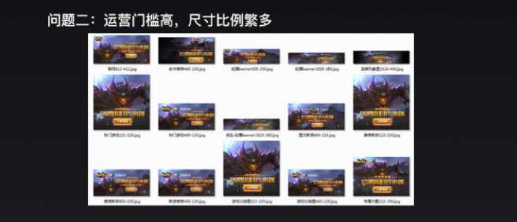
旧官网运营尺寸繁多的原因是主体产品形态多样化造成的，但很多模块通过点击流热度分布我们可以看出很多模块基本“无人问津”。官网首页的核心路径都在首页首屏的位置，所以在做新官网时，模块的合理化布局就成为最关键的环节。为了使运营门槛降低，方便运营同学做个性化高频次的运营，新官网需采取同一比例不同大小的策略更适合。（比如说：首页大banner和二级页面banner和活动列表图都采用了同一比例规则）
问题三解析：
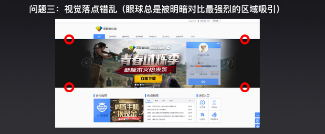
最容易吸引视觉注意力的一定是对比（明度、色相）最强烈的地方，所以用户的视觉注意力应该合理的安排在所需要引导注意的地方，如banner内容、特殊入口等。解决方向：可以用渐变的遮罩处理banner的边缘位置，柔和的过度使用户的注意力不被吸引，周围偏暗的页面底色使视觉更容易聚合在核心中心区域，渐变的底色又使得页面不压抑，有透气感。
问题四解析：
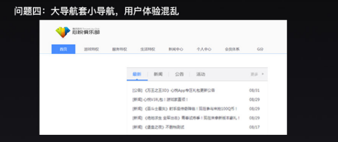
大导航套小导航使得用户体验混乱，内容繁杂，新版官网从交互习惯上做分析，更适合树状结构+瀑布流的浏览习惯，全站只采用全局导航的形式统一体验。
问题五解析：
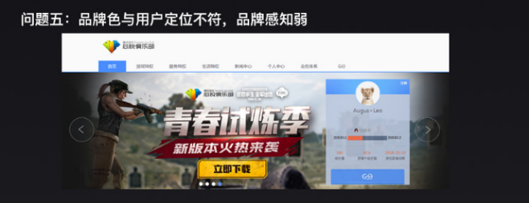
由于心悦业务形态，大多数内容都是和游戏产品合作活动，导致各种logo在页面中显得很无序的存在，使得用户对心悦品牌的感知较弱。根据用户画像分析，心悦核心用户为游戏高付费用户，原有的蓝色也不符合用户属性的定位。所以解决方向：心悦logo是长期悬浮在导航栏的固定位置，以加强用户对品牌的认知。在向下浏览时可通过导航栏的状态变化加强了品牌认知。在运营素材上，只有合作方logo，巧妙的与心悦logo上下并列，banner轮播时心悦logo不变，合作方logo随着banner的轮播切换而切换，从而形成主次关系，加深品牌认知。金色的品牌色也更符合用户定位，与本品牌其他产品形成统一（App、微官网…）。
问题六解析：
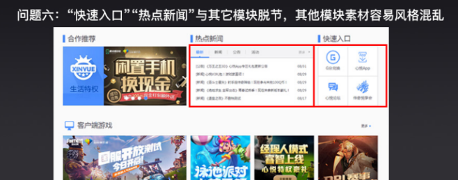
“新闻”模块是一个重要但层级需求不是很高的模块，其设计形式与其它模块脱节导致页面看起来不是一个整体；“快速入口”也因为设计的脱节使得没有发挥出应有的作用。解决方向：这两个模块和页面整体的融为一体，hover状态清晰有互动，使得页面更加活泼有生命力，而不是一个“死气沉沉”的静态页面。
问题七解析：
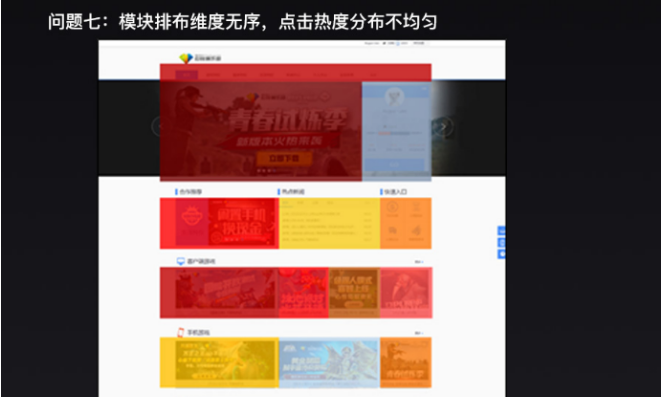
通过把内容模块完全拆散，再建立“好——坏”“重要——不重要”的分析模型，梳理出那些是重点要做的模块，哪些是需要砍掉的模块，哪些是需要选择性去做的模块。
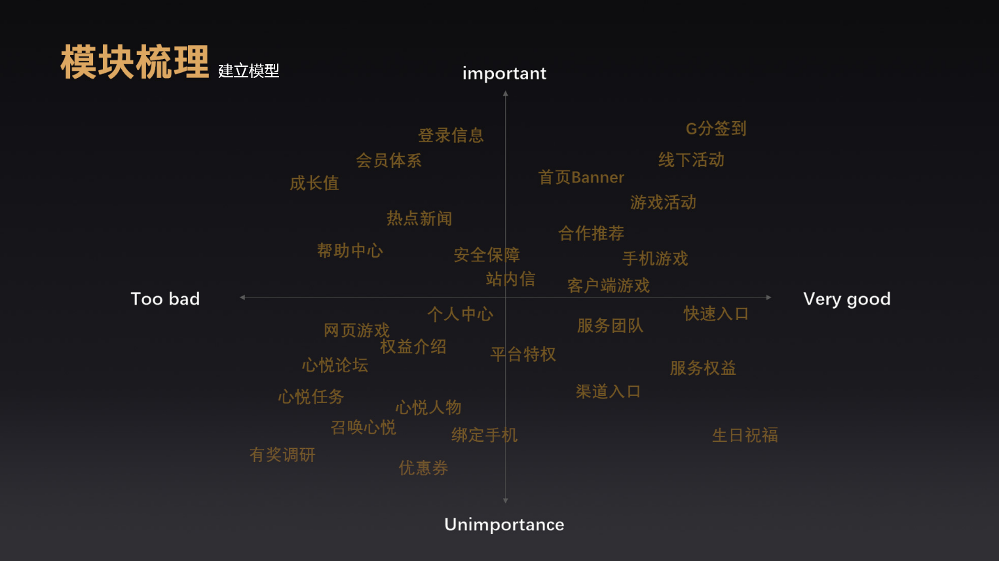
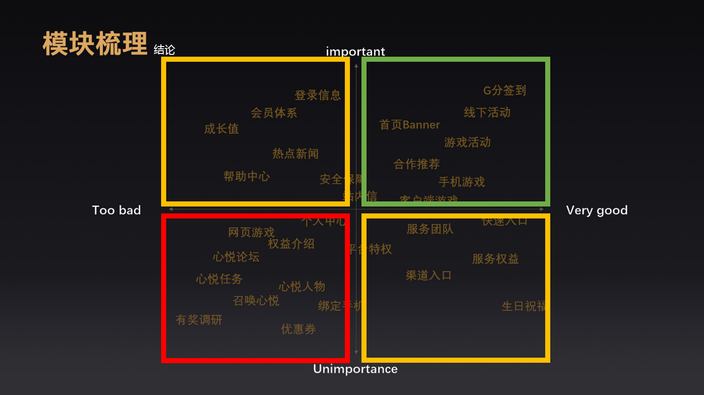
2.2目标确定
以上分析的这些问题，我们进行了问题维度的归类，其实要解决的就是：体验维度、承载维度、识别维度。
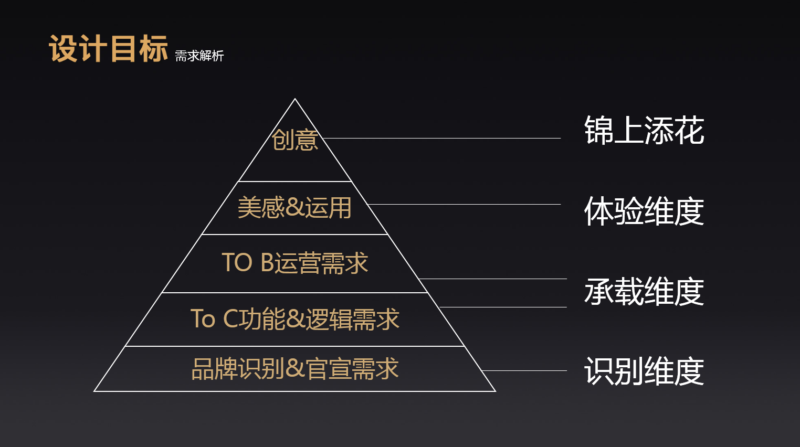
落实到最终目标就是：
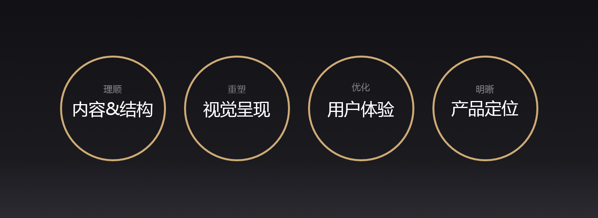
三 设计分析
3.1用户分析（who）
一个产品很重要的一点就是需要知道用户是谁，他们有着怎么样的特征标签，和哪些用户习惯和审美偏好。
通过用研分析，我们看到心悦的用户群体基本属于以下特征：以男性为主、青年、主要生活在一线城市、高学历、高收入、会消费娱乐、在游戏中高频次付费、时间充裕…
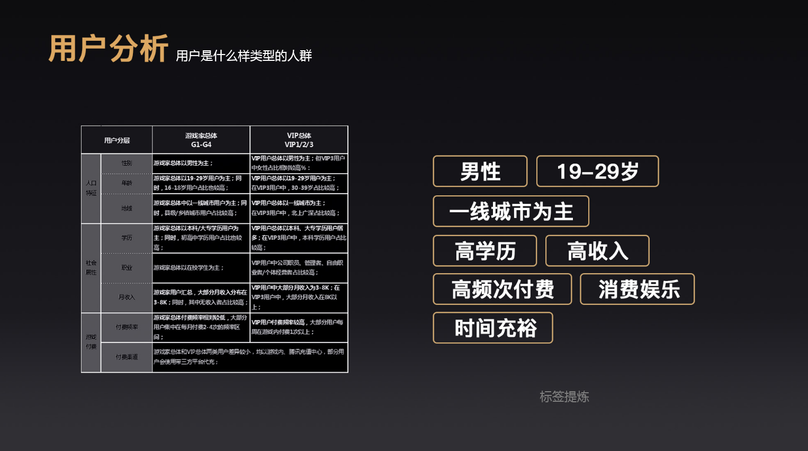
这群类型的用户在互联网产品中，更注重体验、希望得到尊贵感、视觉更希望有质感&年轻化、整体体验更希望与众不同、有品位。
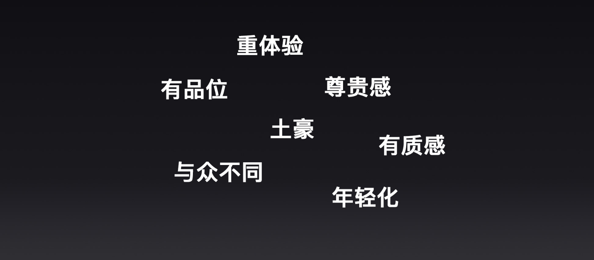
3.2定位分析（what）
定位分析的意义在于我们要清楚自己是谁，在整个市场上我们自己的定位是什么样的，差异点在哪，竞品有哪些优点可以学习借鉴，有哪些缺点，从而最终得出结论。
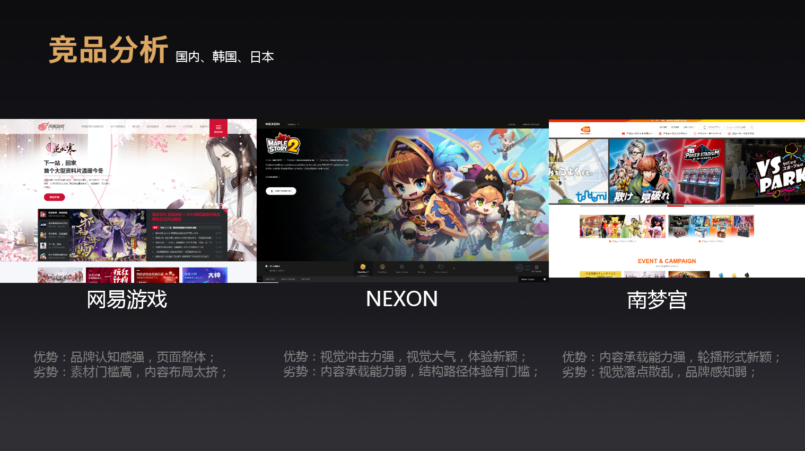
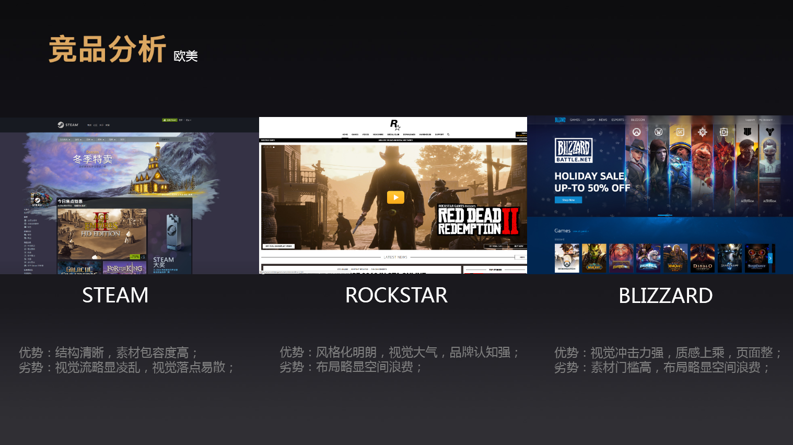
结合以上分析，心悦官网的定位是：第一品牌宣传，让用户知道“我”是谁，“我”是干嘛的；然后是承载内容，让用户知道来官网可以做什么；对用户层面需要体验合理流畅，让用户知道自己在做什么；To B层面需要有有效的资源曝光位吸引用户点击。
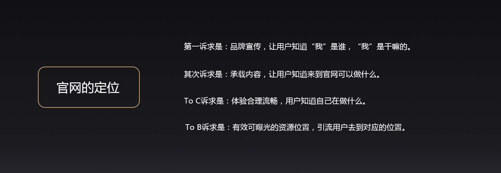
3.3使用场景分析（where/when）
基于以上对产品的定位，从旧官网的数据分析来看，大多数的用户是在PC端浏览，小部分用户（26%）在手机&平板端浏览，所以大部分的体验场景是坐着的，也有较充裕的时间体验（相对于移动端的碎片化时间），也就意味着更适合沉浸式的体验（全屏状态）相对于移动端，浏览习惯倾向于常规瀑布流形态，体验路径结构更适合树状结构，而信息接收习惯更倾向于图片/视频，而非文字类。视觉层面因为此官网的主要内容是运营不同游戏，活动视觉风格多样化，因此视觉需要以扁平化呈现，以适应不同风格的内容得以承载。
以上对于To C使用场景的分析，还有一方面是To B使用场景的需求分析：产品侧的思维更倾向做模块入口，运营侧更需要的是更多的活动banner做资源位，品牌侧的需求更希望强化品宣概念，这就需要我们做出平衡的方案：品牌强调+树状全局导航+特殊入口+大图banner轮播展示。
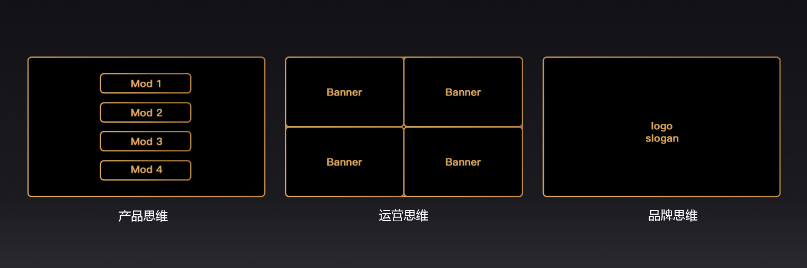
结论：
交互习惯：宽面深层决定树+信息视觉化接收，以鼠键操作为主，树状结构+瀑布流浏览习惯；
视觉习惯：扁平风格，读图为主+文字阅读为辅，全屏浏览；
三维均衡：统一品牌视觉+强化品牌概念，产品功能可拓展性+内容承载性+逻辑通顺合理，运营满足资源推广位+视觉兼容性。
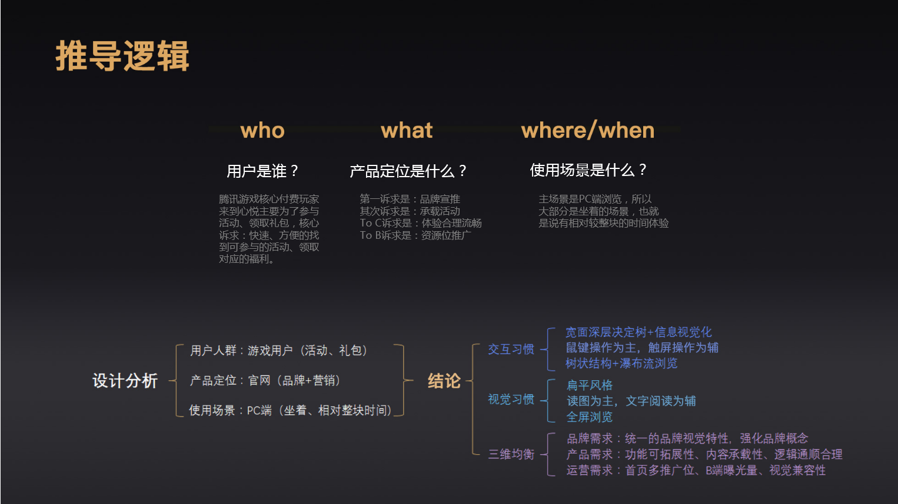
四 设计执行
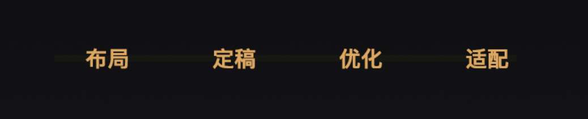
4.1布局
经过分析推导得出以下布局形态：
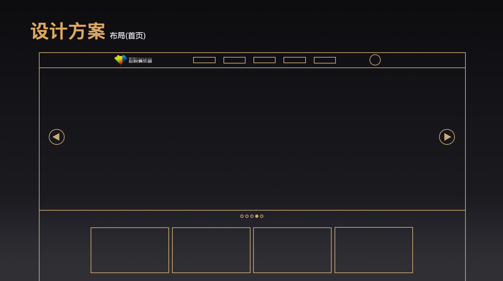
简单尝试设计方向：
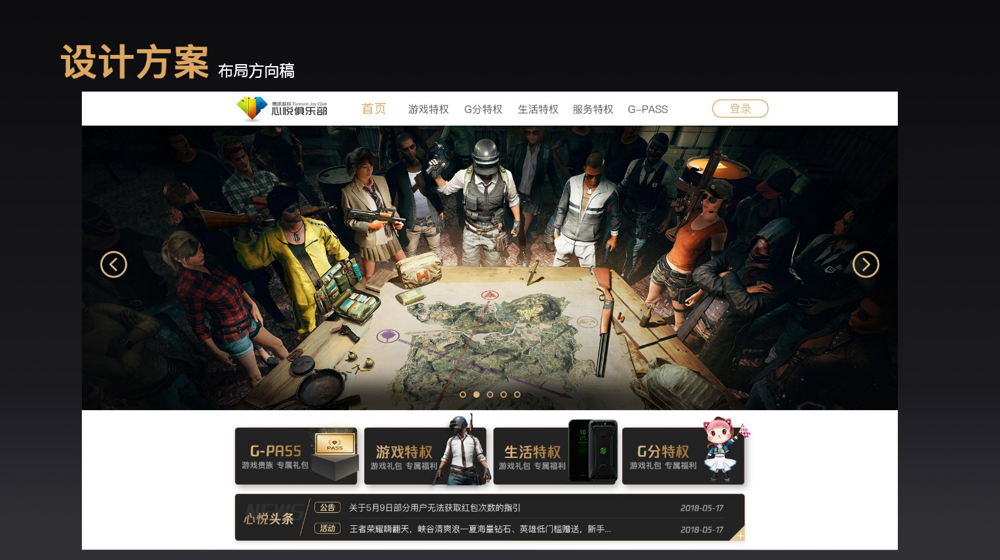
基础需求得以满足，但也发现一些问题没有解决：品牌不够强化、页面不够整体沉浸感弱、差异化&尊贵感的体现。So,继续优化。
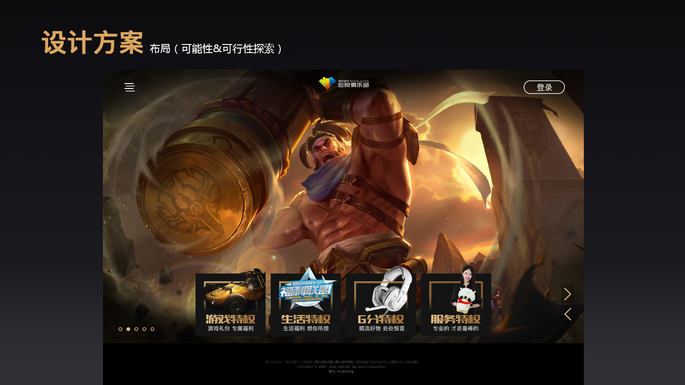
这一版尝试了新颖的方案：品牌位置居中强化，把导航的各模块路径收纳到一个menu按钮内，登录态长期悬浮在右上角的位置，banner轮播切换按钮放在在同侧，banner轮播进度显示和轮播切换按钮各放一侧，特殊入口采用和iMac程序坞类似的设计…，这样做的目的最大化的做到沉浸式体验，主视觉周边干扰元素降到最低，但这样的体验更适合视频类体验或游戏类体验，同时对素材的要求和规范都有着更高的门槛，用户的接受程度也相对于未知，所以结论是：很酷炫，但并不适合我们。
4.2设计方案确定
经过以上分析、定位、尝试，我们最终确定一下设计方案：
心悦俱乐部官网：https://xinyue.qq.com（欢迎直接体验）
（整体页面设计动态视频展示）
导航方案：品牌强化+树状结构+差异化设计=尊贵感、趣味性
全局导航的作用起到全站提纲挈领的作用，所以它的适配性很重要，首先导航分为常态和展开两个状态，在常态下主要有品牌、登录态、menu按钮三个元素，在展开状态下有品牌、各模块入口、menu关闭按钮三个元素。

这样设计的优势是：品牌信息更加强化、首屏时更聚焦banner画面本身（视觉体验轻量，不干扰主视觉核心点）、核心登录态信息随时可看到（促进用户登录量）、各模块入口的可拓展性（增减模块灵活）、网站结构路径清晰、差异化有趣味性有记忆点；劣势是：导航路径操作需要两步、menu操作感知弱、回到首页感知弱、向下浏览时容易叠压视觉。以上劣势后是可以优化的（除操作路径需要两步外），在向下浏览时透明导航变成非透明，menu按钮反色块突出强化，页面增加首页&回到顶部的悬浮按钮。
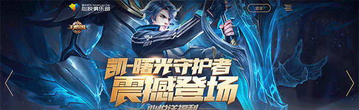
特殊入口方案：为了平衡导航两步操作的门槛，核心业务路径放在banner位下面做特殊入口，在入口数量上做了灵活布局的设计，在入口素材的位置做了实时运营和千人千面的设计方案（根据用户所玩的游戏推荐对应的活动内容），在视觉设计的处理上，也采用和页面融为一个整体的设计思路，解决了旧官网各模块素材视觉不统一，容易脱节的问题。
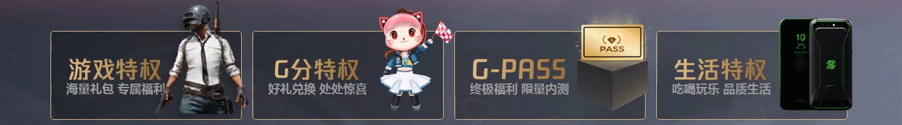
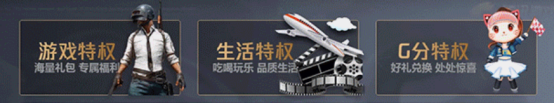
原“新闻公告”模块方案：重新定位包装成“最新资讯”，滚动播出的设计提升了内容承载量和阅读效率，也平衡了首页黄金区域内容承载量和占地面积之间的矛盾。（解决了旧版大导航套小导航的问题）
第二屏方案：作为心悦品牌和核心产品形态的宣传，核心是心悦APP的展示，图文形式较为恰当，如果用户对产品感兴趣，自然会去点击“下载”按钮，这时叠压关系发生变化，二维码信息露出，用户扫码体验，流程合理顺畅；如果用户不感兴趣，二维码的露出也并没有太大意义，反而增加了用户的反感。所以这个叠压的设计方案顺理成章，又不失趣味，增加记忆点。而作为背景的众多游戏icon，为整个品牌衬托传递了更多的心理暗示，内容丰富，注重核心。
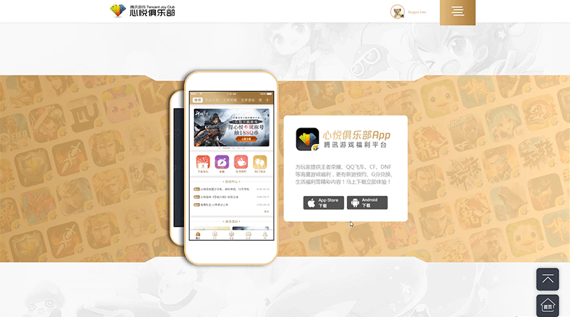
全局页底方案：梳理后的页底有了统一的维度+有温度的互动，作为导航的补充，确保在全站任意位置都可以通过导航+页底去到任意想去的地方，鼠标悬浮出隐藏内容的方案使得体验更有层次，增加互动趣味性和记忆点，解决了旧版维度不统一，静态无互动的问题。
至此，首页改版后的视觉流向也较改版前有了很大程度的优化，整体主路径是以瀑布流的视觉流向为基础，减少了无用的不合理的视觉干扰，在整体体验上做到：让用户看着舒服、有探索欲、知道自己在什么位置、简单明了愉快的体验。
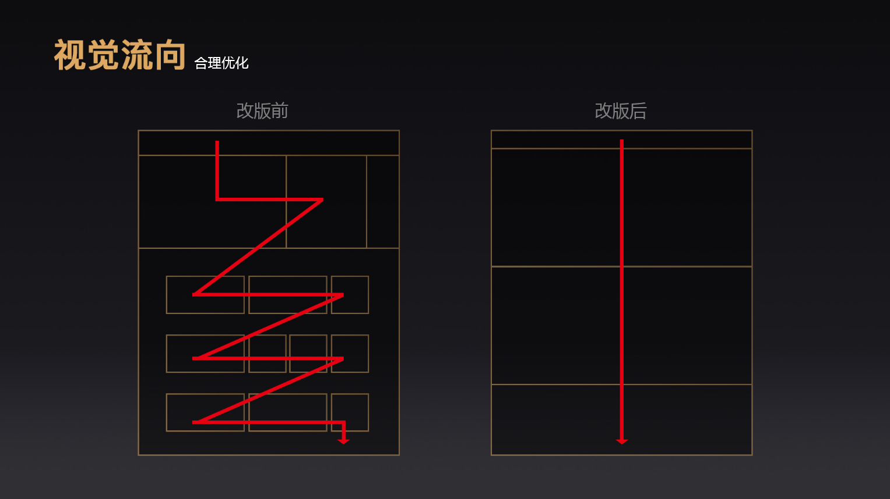
4.3设计优化（创新点挖掘）
Banner切换&进度显示：在banner左右切换按钮的设计上，可否突破传统的设计形式，我们尝试了图二的形式，这样设计的优势在于可以让用户很方便的操作，非常优雅慵懒实用的设计，但对于我们并不适合。于是我们又想：可否能让用户在点击下一页的按钮时预览到下一页的内容？所以有了最终定稿的这版设计：在鼠标悬浮状态时，用一小部分的区域来显示预览的内容，这一点既提升了用户体验增加了趣味感、又做到了差异化。
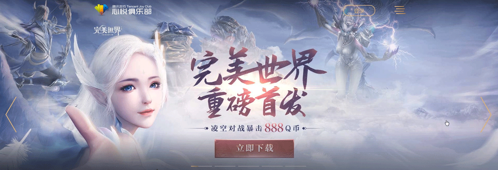
轮播进度控件也是一个非常简单的设计，常规的“点点点”能否让用户知道离下一帧还有多久？我们尝试了在“点点点”里加入读秒的设计，和进度的当前状态可以结合，但还是不适合我们，对banner视觉干扰偏大，所以最终采用了极细的线条状作为进度条的设计方案。
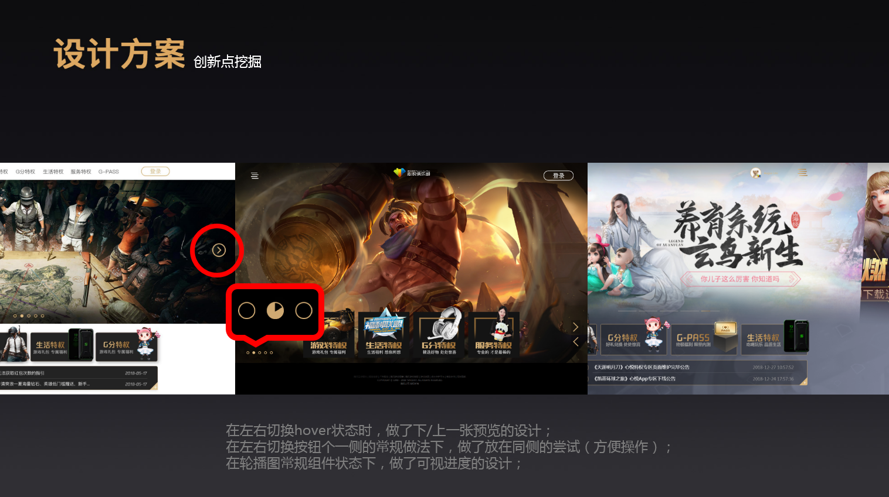
游戏特权页面：作为二级页面，主要功能是内容承载，心悦的很多活动都在此承载，旧版本时此页面只有活动列表的状态，为方便用户更快捷的找到目标内容，此处做了缩略图模式和列表模式的切换设计方案，而图片素材的尺寸也是共用大图等比缩小的方案。
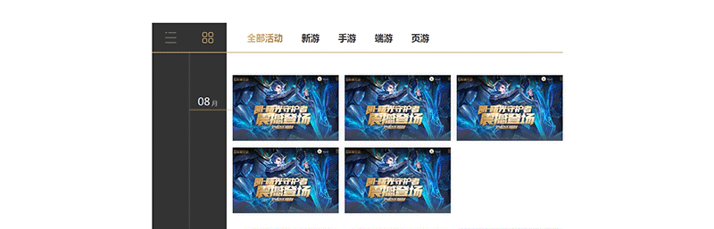
动效：整个页面在优化的过程中加入了很多微动效，微动效的处理需要做到“恰到好处”，没有动效会显得死气沉沉，太过夸张又会显得华而不实。
当我们做到目前状态，其实还有很多细节需要处理，比如大图的加载在网络情况不好的时候，是否可以做个加载状态？这样的体验一定比加载不出来更友好。
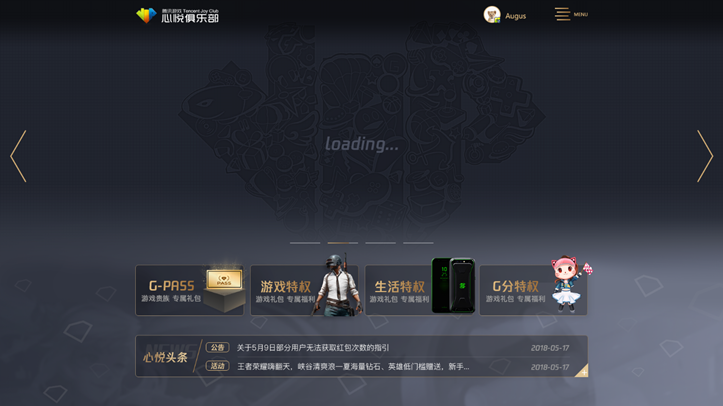
（资源loading状态）
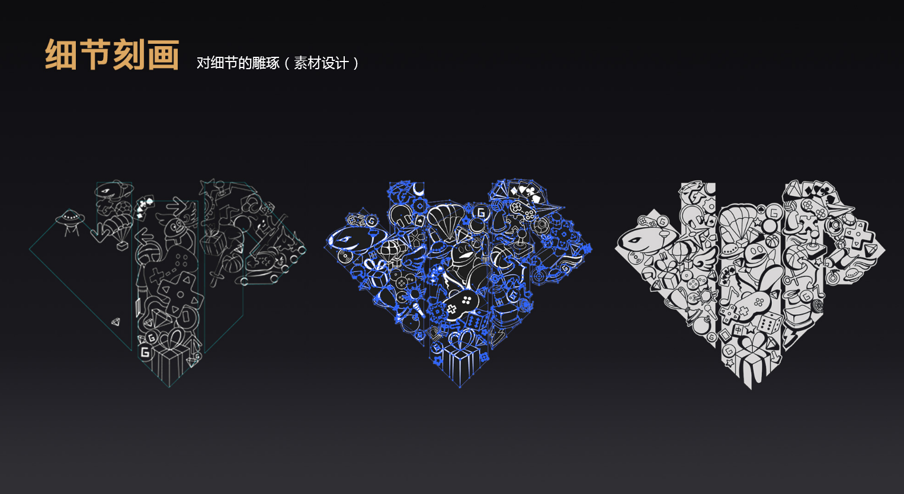
还有404页面等等，不要忘记。
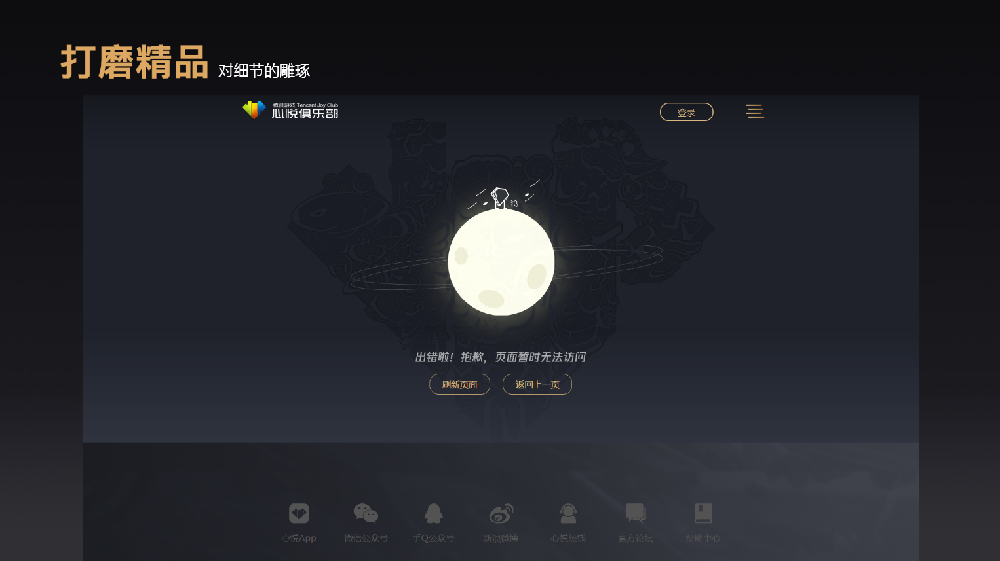
4.4适配设计
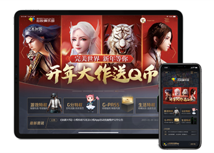
在使用场景分析中（章节3.2），有26%的用户会使用移动端浏览，对于这部分用户我们我们也要认真对待，适配设计就很重要，针对于不同设备需要有不同的设计方案，在手机端，所有的操作需要适应触屏的操作方式，导航展开由横向排列变成了纵向排列，banner的左右切换也取消了切换按钮，变成了滑动切换，原第二屏的品牌产品简介变成了底部悬浮式的下载引导（因为目标设备的一致性），文字、icon、动效的适配等等。

pad端就需要做小屏幕的适配，运用栅格系统，在核心区域内显示的内容在小屏幕做展示，左右两侧区域可弹性显示，兼容触屏和鼠键操作的使用习惯等等。
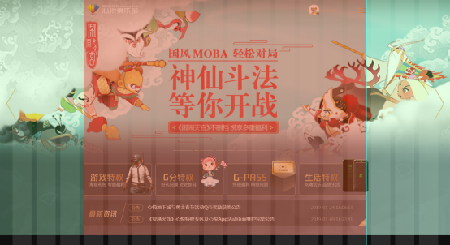
4.5设计心态（配合运营节点抓住机会做精品）

为了配合运营策略，官网上线倒计时页面。这类设计的目的在于意图的传达，有很多好的idea可以发挥，要做到表意和设计的完美结合，多和其他同事交流，确认创意方案，做好可行性评估。并不是做完产品基础设计就万事大吉了，要抓住一切机会做精品，设计才会越做越有趣！
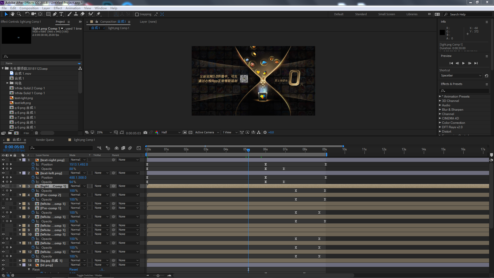
礼包掉落的每一帧动画都需要仔细调试，确保首帧和尾帧可无缝对接，可无限循环。并加入音乐为体验锦上添花。
五 设计总结
5.1设计还原&规范制定
设计稿经过重构、开发、测试等一系列流程落地后，设计还原的过程也是尤为重要，也是保证优质体验的重要环节，以及在运营过程中，需要制定合理可行的设计规范，保证用户体验。
 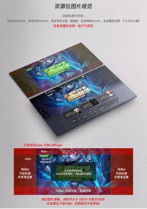
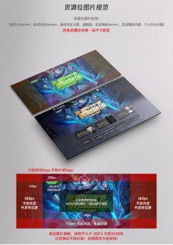
5.2设计验证
心悦俱乐部改版项目进过上线后的一段时的验证，在数据上等到了很好的验证，当然验证的维度还有用户口碑、使用习惯的适应等等。
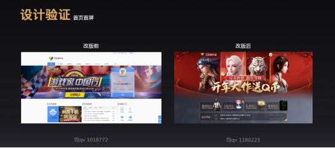
六 设计沉淀
心悦俱乐部改版项目经过一整套完整的流程后，以达到改版的预期目标，作为设计师，我们应该思考下这个项目给业务带来什么？给我们自己带来什么？有哪些经验可以沉淀下来，踩了哪些坑以后可以避免？我们想做好产品设计，首先要想好的是设计思路和策略，在分析中发现自己产品的定位、用户群体的特征习惯，使用场景等。做设计时既要考虑产品的功能/模块，还要考虑品牌的因素，更要兼顾运营的需求，三维的平衡统一才能做出好的产品。当把这些依依分析清楚后，似乎一道开放性试题就逐渐变成了半命题试题。当然设计不是绝对的，也一定有不同的设计方案和方向，我们更要清晰的认知哪些设计是更适合我们的。
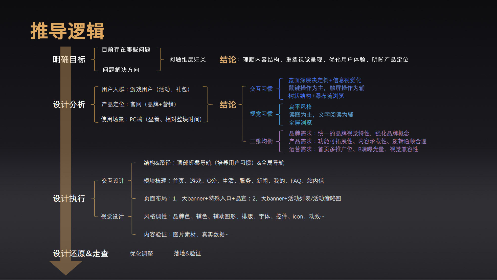
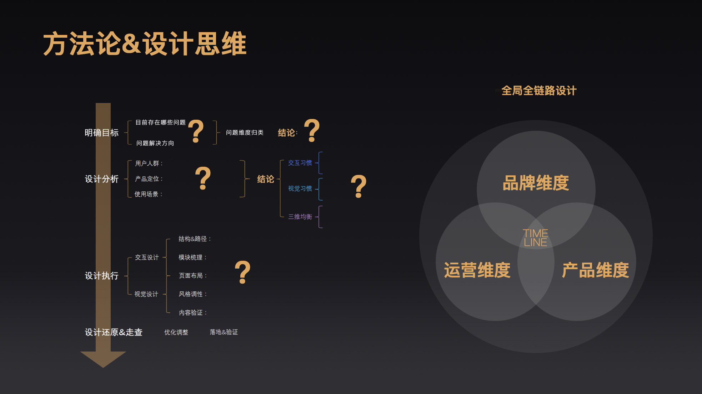
心悦俱乐部官网：https://xinyue.qq.com